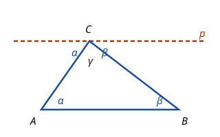

Winkelsätze an Geraden und im Dreieck
Mit einem KI-Tutor lernen
Ein KI-Tutor erklärt dir diese Seite und hilft dir bei den Aufgaben. Wähl deinen Assistenten:
Mit Claude öffnen Mit ChatGPT öffnen Mit Mistral Vibe öffnen
Du nutzt dein eigenes Konto beim Anbieter. Der Assistent ist kein Angebot von lernapps.net: lernapps liefert nur Inhalte und Aufgaben. Die Wahl gilt für alle Seiten, nur auf diesem Gerät.
Was du hier lernst
Du kannst gleich fehlende Winkel berechnen, ohne sie zu messen. Du brauchst nur einen Winkel und einen Satz.
Piet: Im Schulgarten kreuzen zwei Wege. Ich habe einen Winkel gemessen, 70°.
Selin: Dann kennst du den Winkel daneben schon, ohne zu messen.
Aufgabe
Lösung
110° richtige Antwort
Die beiden Winkel liegen zusammen auf einer Geraden, ein gestreckter Winkel hat 180°. 180° − 70° = 110°.
70°
So groß ist nur der Winkel gegenüber (der Scheitelwinkel), nicht der daneben.
20°
20° wäre 90° − 70°. Hier geht es aber um eine Gerade, also um 180°.
Nebenwinkel ergänzen sich zu 180°.
An Parallelen ziehen
Wenn du Winkel nicht jedes Mal messen willst, suchst du Beziehungen, die immer gelten. Dafür änderst du die Neigung einer Geraden an Parallelen und liest die Winkel ab.
Die Geraden g und h sind parallel. Eine dritte Gerade schneidet beide. Ziehe den Punkt am oberen Ende der dritten Geraden oder ändere die Neigung mit den Pfeiltasten (Tabulatortaste zum Punkt). Stelle drei verschiedene Neigungen ein und lies jedes Mal α, β, γ und δ ab.
α = 60°, β = 60°, γ = 60°, δ = 120°
Die Figur steht am Start.Zwei parallele Geraden g und h, eine dritte Gerade schneidet beide. Bei jeder Neigung messen die Winkel: Bei 60° ist α = 60°, β = 60°, γ = 60° und δ = 120°. Bei 90° sind alle vier Winkel 90°. Bei 130° ist α = 130°, β = 130°, γ = 130° und δ = 50°. α und β liegen an gleichen Stellen der beiden Parallelen (Stufenwinkel), α und γ liegen innen auf verschiedenen Seiten (Wechselwinkel), α und δ liegen nebeneinander auf einer Geraden (Nebenwinkel).
Was ist immer gleich?
Wenn du an der Figur etwas entdeckt hast, hältst du es als Vermutung fest und prüfst sie dann.
Aufgabe
Lösung
α und β sind gleich groß. richtige Antwort
Die Winkel liegen an beiden Parallelen an derselben Stelle (Stufenwinkel). Die Messung zeigt immer gleiche Werte.
α und γ sind gleich groß. richtige Antwort
Die Winkel liegen innen auf verschiedenen Seiten der Geraden (Wechselwinkel). Sie sind gleich groß.
α und δ sind gleich groß.
α und δ sind gleich nur bei 90°. Sonst ist δ der Nebenwinkel von α.
α und δ ergeben zusammen 180°. richtige Antwort
α und δ liegen nebeneinander auf einer Geraden, sie sind Nebenwinkel.
Stufenwinkel und Wechselwinkel an Parallelen sind gleich, Nebenwinkel ergänzen sich zu 180°. Das ist erst eine Vermutung aus den Messungen.
Im Dreieck ziehen
Wenn du nur zwei Winkel eines Dreiecks kennst und den dritten ausrechnen willst, suchst du, was alle Dreiecke gemeinsam haben.
Das Dreieck ABC hat die feste Seite AB. Ziehe die Ecke C mit der Maus oder mit den Pfeiltasten. Stelle C an drei verschiedene Stellen und lies jedes Mal α, β und γ ab. Rechne sie zusammen.
α = 33,7°, β = 63,4°, γ = 82,9°
Die Figur steht am Start.Ein Dreieck ABC mit fester Seite AB. Drei Stellungen der Ecke C: α = 45°, β = 45°, γ = 90°. Oder α = 63,4°, β = 33,7°, γ = 82,9°. Oder α = 14°, β = 90°, γ = 76°. Die Winkel ändern sich, ihre Summe nicht.
Aufgabe
Lösung
Richtige Antwort: 180 °
Die drei Winkel ergeben immer 180°. Das ist der Winkelsummensatz. Gleich begründest du ihn.
Warum ist die Summe 180°?
Wenn du sicher sein willst, dass die Winkelsumme in jedem Dreieck 180° ist, brauchst du eine Begründung für alle Dreiecke, nicht nur Messungen.
Zeichne durch C die Parallele p zu AB. Dann kannst du die Wechselwinkel an Parallelen nutzen.

© CC0-1.0Schau auf die drei Winkel bei C. Sie liegen nebeneinander auf der Geraden p.
- Die Gerade AC schneidet die Parallelen p und AB. Der linke Winkel bei C ist ein Wechselwinkel zu α, also gleich α.
- Die Gerade BC schneidet sie ebenfalls. Der rechte Winkel bei C ist ein Wechselwinkel zu β, also gleich β.
- Die drei Winkel bei C liegen nebeneinander auf der Geraden p.
- Darum gilt α + γ + β = 180°.
Merke
Wenn du den Satz später wieder brauchst, findest du ihn hier kurz zusammengefasst.
| Name | Lage | An Parallelen |
|---|---|---|
| Nebenwinkel | nebeneinander auf einer Geraden | ergeben zusammen 180° |
| Stufenwinkel | an der gleichen Stelle beider Geraden | gleich groß |
| Wechselwinkel | innen auf verschiedenen Seiten der schneidenden Geraden | gleich groß |
| Scheitelwinkel | gegenüber, wo sich zwei Geraden schneiden | immer gleich groß |
- Winkelsummensatz
In jedem Dreieck ergeben die drei Winkel zusammen 180°.
Achtung
Stufen- und Wechselwinkel sind nur an Parallelen gleich groß.
Übung
Wenn du prüfen willst, ob du das anwenden kannst, löst du Aufgaben mit neuen Zahlen und neuen Fällen.
Aufgabe
Drei Beispielaufgaben, jede mit ihrer Lösung:
Aufgabe Nr. 1
In einem Dreieck sind α = 55° und β = 45°. Wie groß ist γ?
Tipp
Die drei Winkel eines Dreiecks ergeben zusammen 180°.
Lösung
- Winkelsumme: α + β + γ = 180°.
- γ = 180° − 55° − 45° = 80°.
Richtige Antwort: 80 °
Aufgabe Nr. 2
In einem Dreieck sind α = 30° und β = 45°. Wie groß ist γ?
Tipp
Die drei Winkel eines Dreiecks ergeben zusammen 180°.
Lösung
- Winkelsumme: α + β + γ = 180°.
- γ = 180° − 30° − 45° = 105°.
Richtige Antwort: 105 °
Aufgabe Nr. 3
In einem Dreieck sind α = 30° und β = 65°. Wie groß ist γ?
Tipp
Die drei Winkel eines Dreiecks ergeben zusammen 180°.
Lösung
- Winkelsumme: α + β + γ = 180°.
- γ = 180° − 30° − 65° = 85°.
Richtige Antwort: 85 °
Aufgabe
Drei Beispielaufgaben, jede mit ihrer Lösung:
Aufgabe Nr. 1
Die Geraden g und h sind parallel, eine dritte Gerade schneidet beide. An g liegt der Winkel α = 125°. An h liegt an derselben Stelle der Stufenwinkel β. Wie groß ist der Nebenwinkel von β?
Tipp
Stufenwinkel an Parallelen sind gleich groß. Nebenwinkel ergeben zusammen 180°.
Lösung
- An Parallelen sind Stufenwinkel gleich: β = α = 125°.
- Nebenwinkel ergeben 180°: 180° − 125° = 55°.
Richtige Antwort: 55 °
Aufgabe Nr. 2
Die Geraden g und h sind parallel, eine dritte Gerade schneidet beide. An g liegt der Winkel α = 35°. An h liegt an derselben Stelle der Stufenwinkel β. Wie groß ist der Nebenwinkel von β?
Tipp
Stufenwinkel an Parallelen sind gleich groß. Nebenwinkel ergeben zusammen 180°.
Lösung
- An Parallelen sind Stufenwinkel gleich: β = α = 35°.
- Nebenwinkel ergeben 180°: 180° − 35° = 145°.
Richtige Antwort: 145 °
Aufgabe Nr. 3
Die Geraden g und h sind parallel, eine dritte Gerade schneidet beide. An g liegt der Winkel α = 50°. An h liegt an derselben Stelle der Stufenwinkel β. Wie groß ist der Nebenwinkel von β?
Tipp
Stufenwinkel an Parallelen sind gleich groß. Nebenwinkel ergeben zusammen 180°.
Lösung
- An Parallelen sind Stufenwinkel gleich: β = α = 50°.
- Nebenwinkel ergeben 180°: 180° − 50° = 130°.
Richtige Antwort: 130 °
Aufgabe
Lösung
Richtige Antwort: Die Aussage stimmt nicht.
Die Summe ist 190°. In einem Dreieck sind es immer 180°, so ein Dreieck gibt es nicht.
Aufgabe
Lösung
Richtige Antwort: 1. Zeichne durch C die Parallele zu AB., 2. Die beiden Winkel bei C neben γ sind gleich α und β (Wechselwinkel)., 3. Die drei Winkel bei C liegen auf einer Geraden und ergeben 180°.
Erst die Hilfslinie, dann die Winkel, am Ende die Gerade. So steht α + γ + β = 180°.
Begründe in eigenen Worten
Wenn du einen Satz wirklich verstanden hast, kannst du ihn mit eigenen Worten begründen.
Offene Aufgabe
Erkläre in zwei bis vier Sätzen, warum die Winkel in jedem Dreieck zusammen 180° ergeben.
Eine gute Antwort enthält:
Lösung
Ich zeichne durch C die Parallele zu AB. Der linke Winkel bei C ist ein Wechselwinkel zu α, der rechte ist ein Wechselwinkel zu β, also sind sie gleich groß. Die drei Winkel α, γ und β liegen bei C nebeneinander auf einer Geraden, darum ergeben sie 180°.
Fehler gefunden oder eine Idee für diese App?